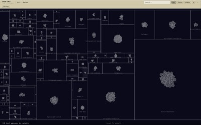
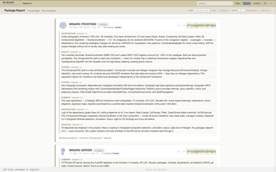
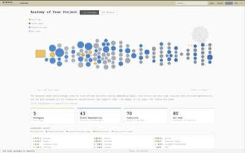
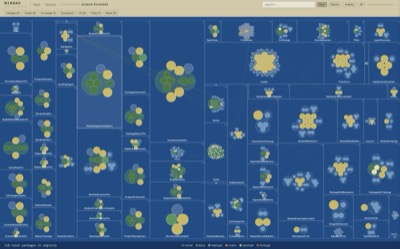
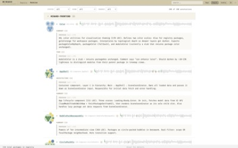
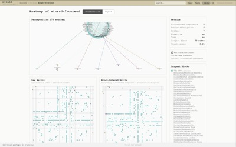
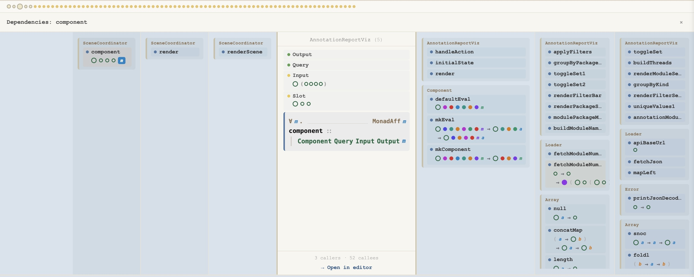
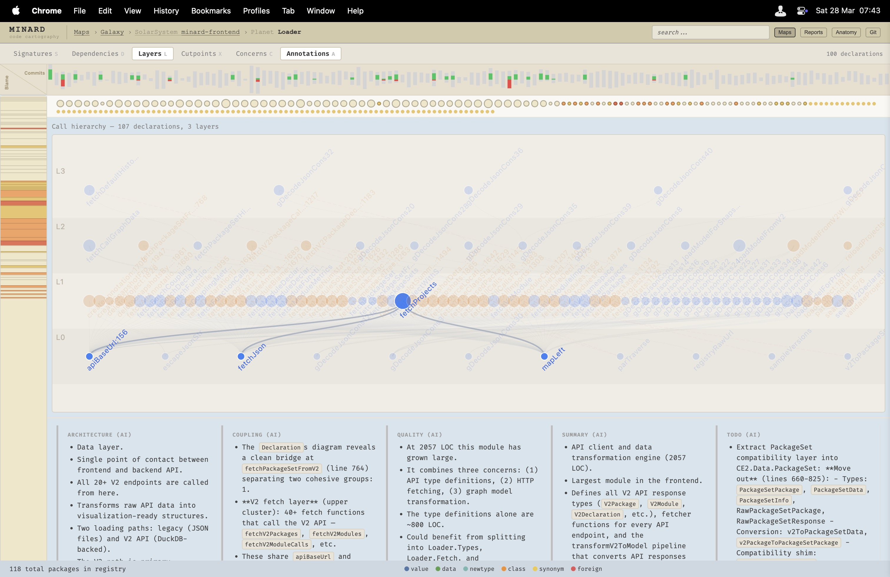

Minard
Code cartography for PureScript
❧ ⚜ ❦
A new integrated approach to understanding and navigating large codebases in collaboration with AI agents.
❧ ⚜ ❦
The Problem
As you and your AI are writing
100's of KLOC...
How will you understand what's getting written?
How will you know whether a change was pervasive or local?
How will you see if it changed the coupling of modules?
How will the AI understand what it's been writing?
At scale, you need maps.
What
Four Lenses, Three Levels Deep
Every lens drills from the full package universe down to individual declarations.
Maps · Project
Galaxy Treemap
Packages as rectangles, modules as bubbles inside them — two levels of structure, each clickable

Galaxy Treemap

Package Report

Project Anatomy

Module Treemap

Module Annotations

Decomposition
Module Level
Where All Four Lenses Converge
At the lowest level before the actual code, all four lenses meet in a single, configurable view of the module.
Typographically enhanced signatures, intra- and inter-module dependencies, areas of concern,
and git history — all in one dynamic interface.
The next step from here is into the code itself — a single click opens the module at the relevant line in your editor.
Demo Video
Galaxy → Solar → Planet → Code
▶
Screen recording: top-level to a line of code in four clicks
Module Planet

Dependencies

Annotations
Dynamic · Configurable · Navigable · Interactive · Actionable
Overlays
See What The Code Can't Tell You
Each visualisation is both navigation, orientation and also directly answers questions.
What's unused?
Instantly see which modules are unreachable from your entry point — dead code, visible at a glance.
What's pure?
Separate pure computation from effectful I/O across your entire package — a structural property made visible.
What packages are local?
See at a glance what packages are local and whether your target can be built from the registry
What changes together?
Modules that are always modified in the same commit reveal hidden coupling that the type system can't see.
Demo Video
Overlays in Action
▶
Screen recording: cycling through overlays on the Module Treemap
Demo Video
Moving Between Widgets in Planet View
▶
Screen recording: toggling panels, focusing declarations, exploring layers and concerns
How
Expand Everything, Then Focus
↓
↓
Source, compiler output, and git history flow into DuckDB — every call, type, import, and blame line materialized.
Then a single targeted query compresses 1.1 GB down to exactly the answer you need.
Why
Design Principles
Database-first.Expensive analysis at load time. Queries are fast.
CLI + Viz.The AI needs queryable data. The human needs pictures. Same database, different interfaces.
Declarative.Visualizations describe what, not how. Hylograph's HATS AST handles the rest.
Multi-scale.No single view suffices. Fluid navigation across levels is the core interaction.
AI as participant.Cached structural analysis means agents don't re-derive understanding every conversation.
AI
AI as a First-Class Participant
Cached Thinking
AI annotations record structural analysis — "this module bridges two concerns", "this function is the only path between layers" — and persist for both bots and humans to build on.
When you start or resume work, the thinking is already there.
Conversational Review
Every annotation can be confirmed, disputed, or superseded. Human review isn't approval — it's a conversation that builds shared understanding.
The history of interpretation is as valuable as the code.
API-First for Agents
The full structural database is available via REST. An AI agent can query dependencies, trace call graphs, and read prior annotations — without reading source.
Your coding assistant can ask the database instead of grep.
API
What an AI Learns in 6 API Calls
Q1What is this project?
❯ GET /api/v2/stats
• 437 packages, 4,556 modules, 50,270 declarations
• 84,177 function calls tracked
Q2Which packages are mine?
❯ GET /api/v2/packages → filter workspace
• minard-frontend: 81 modules, 34K LOC
• minard-server, cartography-database, ...
Q3What's most complex?
❯ GET /api/v2/modules → sort by LOC
• Data.Loader: 2,030 LOC, 100 declarations
• SceneCoordinator: 1,618 LOC — orchestrator
Q4What do annotations say?
❯ GET /api/v2/annotations?target_id=SceneCoordinator
• [architecture] Orchestrator. Owns Scene state machine.
• [quality] handleAction has 25+ branches, ~900 lines.
Q5What does every module do?
❯ GET /api/v2/annotations?kind=summary
• 85 module summaries, each 1–3 sentences
• Complete map of the codebase in one query
Q6What's the architecture?
❯ GET /api/v2/annotations?kind=architecture
• "Four-layer architecture: Types, Data, Viz, Components"
• "Orchestrator. All interactions flow through action handler."
6 queries. 0 source files. Full architectural understanding.
Minard Today
Written in PureScript and Rust. Aimed at PureScript codebases, with other languages coming later.
Try It
Minard is open source and ready to explore your PureScript codebase.
git clone https://github.com/afcondon/minard
cd minard && make bootstrap && make start
❧ ⚜ ❦
← → to navigate